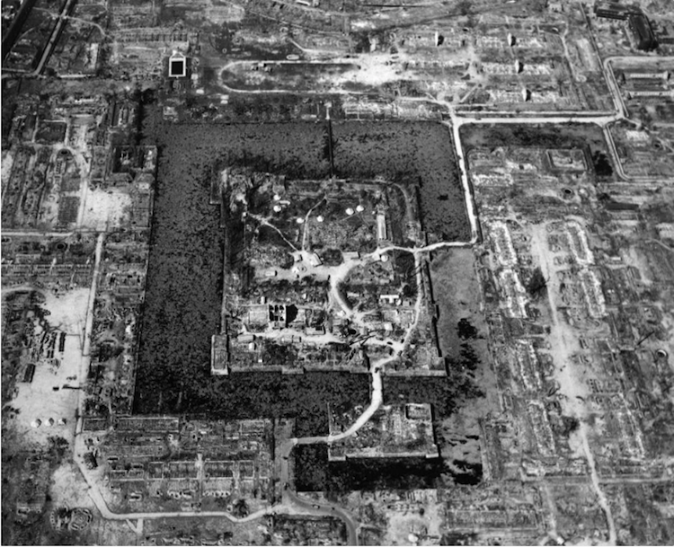
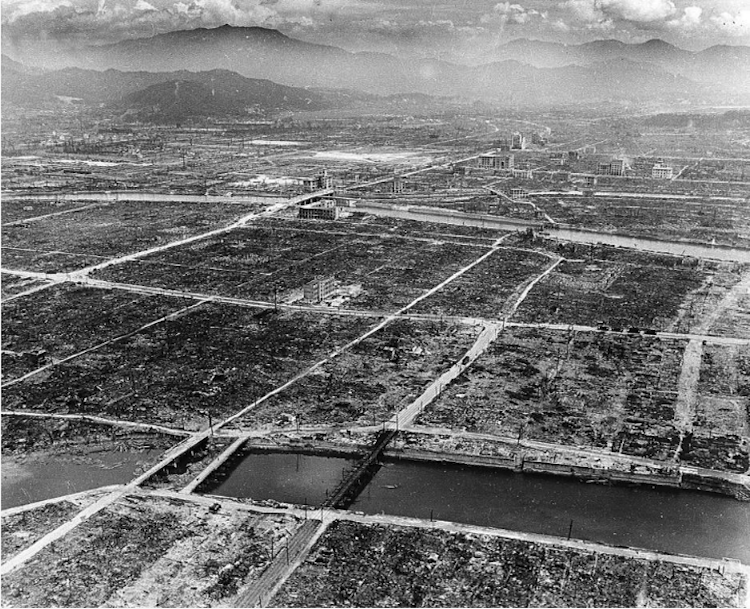

Thesis
Gallery:
1 / 3

An arial view of Hiroshima, one month after the bombing.
2 / 3

Hiroshima castle, which dated back to the 16th century
3 / 3

A few stell and concrete building and bridges stand intact in Hiroshima, as see on Sept 5.